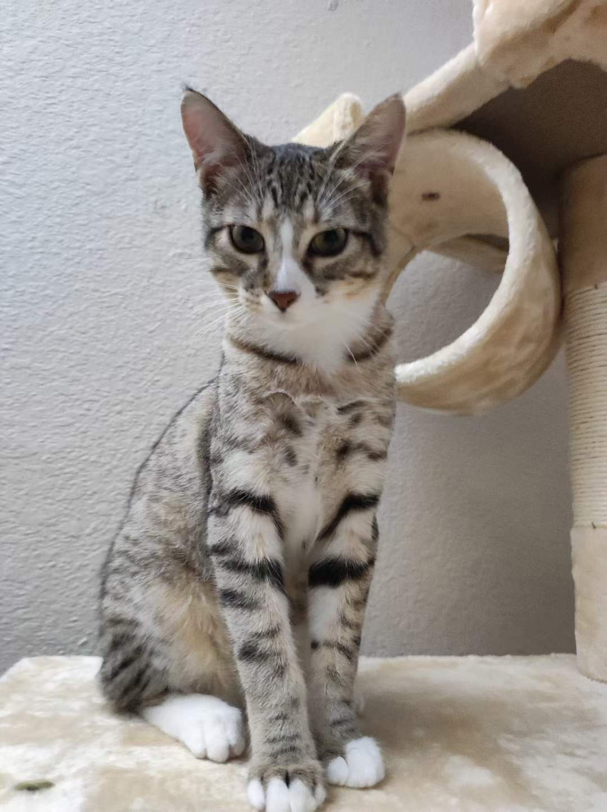
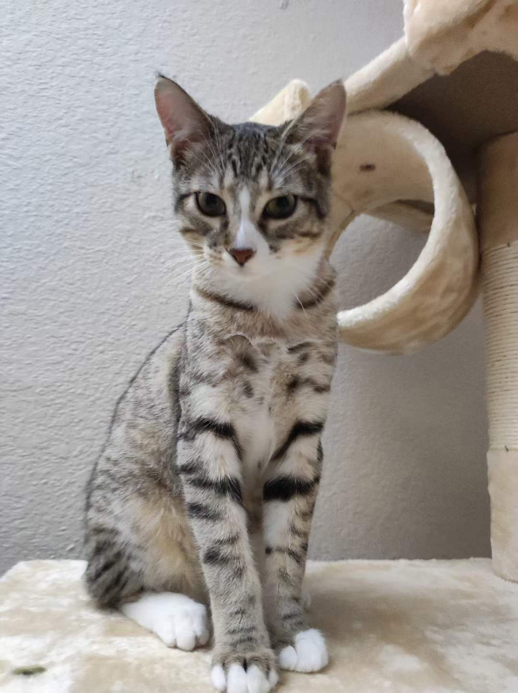

Sprout

"Sprout, a shy and elusive kitten when he first arrived at four months old, gradually became an affectionate companion. He enjoyed sleeping on my bed, but his early morning wake-up calls at 6:30 AM were a daily routine.
"During my challenging academic phase, Sprout became my constant companion during late-night drawing sessions, quietly curling up on my lap, providing comfort and banishing solitude."
-Kai Liu
Photo Gallery
 



Likes
- Egg
- Playing with Naer and my tennis string
- Sleeping in the sunshine
Kai Liu
Lulu

Lulu is a lively guinea pig who enjoys eating carrots and peppers. When not given any carrots or peppers she will squeak.
Lulu is very adventurous, she will explore her surroundings looking for food and is not afraid.
Photo Gallery


Likes
- Peppers
- Carrots
- Sleeping
Ken
Koda
Koda is a 1 year old English Golden Retriever. Some of her nicknames include Koda Bear and KP. Her favorite human foods are watermelon and pumpkin, and she is terrified of baths.
Koda enjoys dragging family on long walks, eating ice cubes, playing fetch, and doing living room zoomies in her free time.
Photo Gallery

Likes
- Long walks
- Duck toy
- Sprinklers
- Stealing socks
Lauren Asam
Rocket

Rocket (also named huihui) is a 6-month pomeranian puppy with big eyes and a small, black cute nose. Rocket is named rocket because he runs so fast and energetic all day without even having some rest. Rocket loves to carry his little toy walking around the house and jumping towards my bed.
Rocket is friendly to all human beings. He will be a little shy at first, but will ‘say hi’ to you after a few seconds. He is also friendly to dogs, especially the small breed, because the large size dogs are hard for him to smell lol. If you meet rocket, don’t hesitate to say hi to him!! He will be super happy the whole day.
Photo Gallery


Likes
- Chewing bones
- Running
- Chasing
Huiyu Su (Bonnie)
Fitzwilliam "Fitz" Darcy
Fitz is named after Mr. Darcy from Jane Austin's Pride and Prejudice. He loves chasings tennis balls, chipmunks, squirrels, and birds. He's often found sitting by the fire in wintertime and in sun patches when available. He’s energetic, mischievous, and easily bored. He loves people and gets grumpy if left without a lap too long.
He loves barking up trees, running around on the lawn, and digging in the dirt looking for moles. He especially likes getting treats and whines when he comes inside and doesn’t get a snack.
Photo Gallery


Likes
- Cuddles
- Being warm
- Barking
Kay Malan
Bingley
Bingley is a dorky, fun-loving boxer with a hypothyroid condition. He sheds like crazy and covers everyone he meets in white fur. He loves to bark at nothing.
He's huge! He's about 90 pounds and comes up to a person's chest when he's on his hind legs. He doesn't know his own strength though, and tends to slam into people whenever he gets excited (so anytime anyone comes through the door).
Photo Gallery


Likes
- Tug of war
- Fuzzy beach ball toys
- Getting pets
Kay Malan
Rosie
Rosie unfortunately passed away at almost 15 years old in 2022. She was grumpy, bossy, and loved taking long naps in the sun.
She liked food and treats and would grumble when it was time for breakfast, lunch, or dinner. She liked getting pets and occasionally playing tug of war. Her favorite thing to play with was a snake squeaky toy.
Photo Gallery


Likes
- Sleeping
- Food
- Bossing other dogs around
Kay Malan